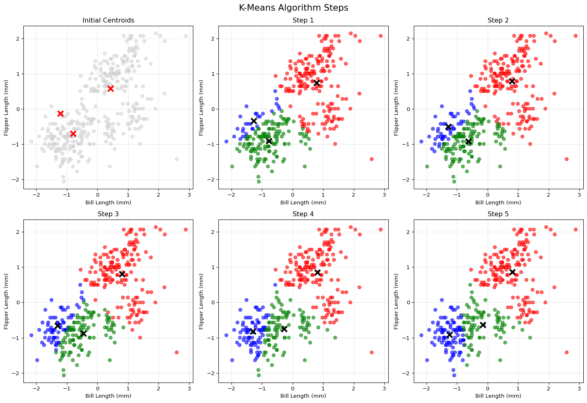
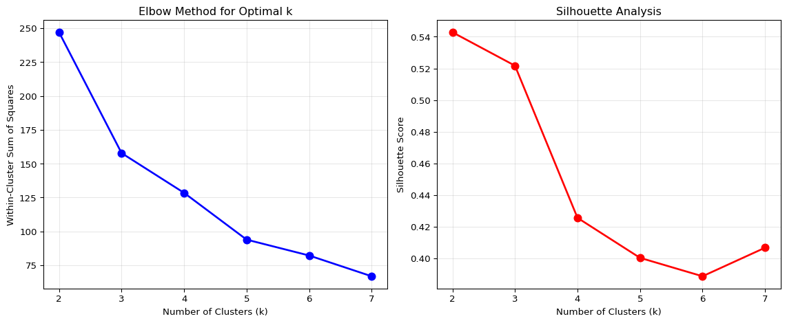

#load data and run analyses on itdf = sns.load_dataset('penguins')df_clean = df.dropna(subset=['bill_length_mm', 'flipper_length_mm'])X = df_clean[['bill_length_mm', 'flipper_length_mm']].valuesscaler = StandardScaler()X_scaled = scaler.fit_transform(X)labels, centroids, history = kmeans_custom(X_scaled, k=3, random_state=42)plot_kmeans_steps(X_scaled, history, 3, "K-Means Algorithm Steps")

The sequence of panels, from “Initial Centroids” through “Step 5,” illustrates the core assign–update loop of the K-Means algorithm applied to bill length and flipper length measurements in the Palmer Penguin dataset. Initially, three centroids are placed arbitrarily among the unlabelled observations. In each subsequent iteration, data points are reallocated to the nearest centroid and the centroids are recomputed as the means of their assigned points. By Steps 3 and 4, cluster membership stabilizes and the migratory adjustments of the centroids diminish. The final panel demonstrates convergence: no observations change cluster assignment, and the centroids reside at the centers of their respective red, green, and blue clusters, confirming the correctness of the custom implementation’s iterative procedure.
wcss, silhouette = analyze_clusters(X_scaled)

The WCSS (Within-Cluster Sum of Squares) curve declines sharply from 247.02 at K=2 to 157.82 at K=3, thereafter exhibiting a pronounced “elbow” that signals diminishing marginal gains in compactness for K>3. In contrast, the average silhouette coefficient attains its maximum of 0.543 at K=2 and steadily decreases thereafter, reaching a nadir near 0.389 at K=6 before a minor uptick at K=7. Together, these diagnostic plots suggest a trade-off between intra-cluster cohesion and inter-cluster separation: two clusters maximize separation, whereas three clusters balance compactness and parsimony most effectively.
Overlaying the custom K-Means solution with scikit-learn’s KMeans for K=3 reveals near‐identical partitionings: point assignments and centroid locations coincide, thereby validating the fidelity of the bespoke algorithm. The accompanying summary table reports WCSS values decreasing monotonically from 247.02 (K=2) to 66.87 (K=7), while silhouette scores decline from 0.543 to 0.389 across the same range. From an analytical standpoint, if the objective is maximal cluster separation, a bi-cluster solution is theoretically optimal; however, when interpretive granularity is paramount, the elbow at K=3 justifies a three-cluster segmentation as the most defensible compromise.
The training‐set visualization depicts 100 synthetic observations colored according to the binary label y y. A sinusoidal decision boundary is overlaid as a dashed curve. Points above the curve are marked in blue and those below in red revealing a highly non‐linear separation and substantial class interleaving near the inflection points. This plot confirms that the dataset embodies a challenging classification problem, one in which local neighborhood structure is critical.
The test‐set plot applies the same boundary and coloring scheme to 100 novel points drawn under a different random seed. It illustrates the generalization challenge: although the sinusoidal frontier remains fixed, new observations cluster differently, producing both congruent regions of color and scattered misclassified points when compared to a fitted classifier. This overlay highlights how a KNN rule—especially at small k must adapt to local fluctuations in data density to approximate the true wiggly boundary on unseen data.
Optimal k: 1
Best accuracy: 95.00%
Custom vs Sklearn match: True
The accuracy curve shows that both the hand-coded and scikit-learn KNN classifiers achieve identical performance across all neighbor counts, confirming the correctness of the custom implementation. Classification accuracy peaks at 95 % when k=1, then falls to 91–93 % for small odd values of k, dips further to around 90 % for k≈9 and again near 17, and reaches a minimum of 89 % at k=27. This pattern exemplifies the bias–variance trade-off inherent in KNN: k=1 yields high variance but captures local structure most faithfully (thus highest accuracy on this test set), while larger k values smooth over local fluctuations, increasing bias and reducing accuracy. Consequently, the plot identifies k=1 as the optimal choice for this particular boundary-defined dataset under raw accuracy.